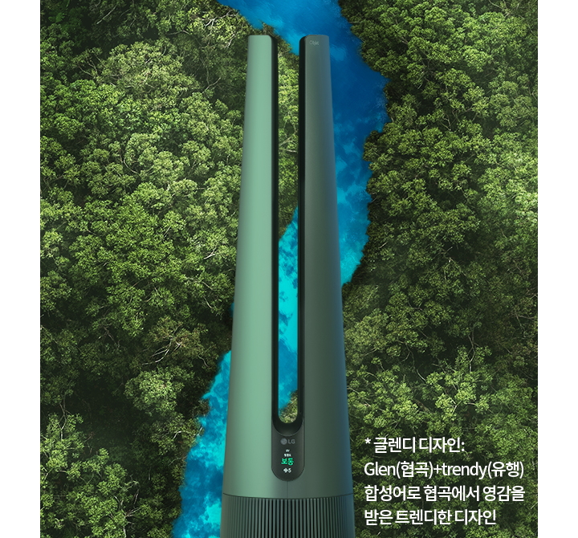
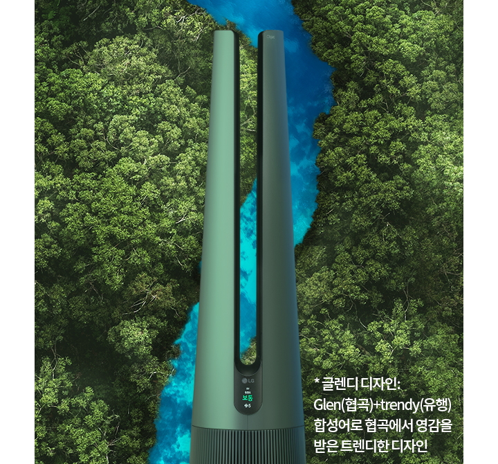

세상에 없던 새로운 바람 LG퓨리케어 Glen Tower 공기청정팬 - 공간을 빛내는 바람 : 혐곡을 수놓은 감각적 디자인 - 자연의 청량한 바람 : 사계절 쾌적한 바람/청정 모드 - 건강하고 청결한 바람 : 99.99% 초 정밀 살균
Glendy 디자인
자연에서 영감받은
수려한 자태
대자연 협곡을 모티브로 탄생한 Glen Tower는
당신의 공간을 기분 좋은 바람으로 채워줍니다.
여러 갈래의 공기를 하나로 모아주는 공기역학
기술로 협곡에서 불어오는 듯한 자연의 신선한
바람을 그대로 전해주죠.
- Disclaimer
자연에서 영감받은
수려한 자태
당신의 공간을 기분 좋은 바람으로 채워줍니다.
여러 갈래의 공기를 하나로 모아주는 공기역학
기술로 협곡에서 불어오는 듯한 자연의 신선한
바람을 그대로 전해주죠.
- 디스클레이머 텍스트 영역입니다.
4가지 컬러 옵션
공간에 맞춤하는
예술적인 컬러
협곡을 형상화한 우아한 실루엣은 존재 자체로
예술적인 분위기를 연출합니다.
여기에 공간의
쓰임새와 당신의 취향에 맞춰 유행을 타지 않는
4가지 컬러를 자유롭게 선택할 수 있죠.
- Disclaimer
바람모드
닿는 순간 기분 좋은
건강한 바람
기분까지 상쾌해지는 천혜의 자연 바람을
거실 소파, 침대에 누워 편하게 느껴보세요.
1.5m 넓은 바람 폭으로 부드럽게 퍼지는
쾌적한 바람이 집 안 곳곳을 기분 좋은
시원함으로 빠르게 채워줍니다.
- Disclaimer
청정모드
사계절을 아우르는
청량한 바람
직바람 없이 숲속처럼 은은한 서늘함을
원한다면 청정모드를 활용해보세요.
바람의
방향을 전후면, 상단 3면으로 나눠 퍼트려
청량한 공기를 산뜻하게 채워줍니다.
- Disclaimer
U자 모양 구조 - TBD
바람의 기준을
바꾸는 기술
팬 없이도 전례 없던 시원함을 완성할 수
있었던 이유, 바로 비행기 제트엔진 기술과
자동차 고효율 엔진 기술 덕분이죠.
주변의
공기를 더 많이 빠르게 흡입한 후 부드럽게
확산시켜 넓은 공간도 거뜬히 커버합니다.

파랑색 굵은 화살표 : 코안다(Coanda) 효과 / 회색 얇은 화살표 : 벤추리(Venturi) 효과
- Disclaimer
저소음 팬 & 유로시스템
소리를 남기지 않는
쿨한 바람
강력한 바람을 갖추고도 느껴지지 않을 만큼
조용합니다.
3D 블레이드 날개와 다공성 유로
설계로 도서관 수준의 고요함을 완성했죠.
아이가 잠든 방 안에서도 맘 놓고 사용하세요.


자동차 경적 소음 : 120dB / 조용한 승용차 실내 : 60dB / 도서관 : 50dB / 퓨리케어 공기청정팬 : 46dB
- Disclaimer
에어터널
첨단 냉방 기술의 집약체
이런 놀라운 바람을 완성할 수 있던 배경에는
바로 LG 에어케어 기술이 있었습니다.
휘센 에어컨의 기류 제어 기술인 에어가드를
Glen Tower 에어터널에 그대로 적용시켜
압도적 바람결, 독보적 저소음을 탄생시켰죠.
- Disclaimer
안심공기 시스템
남다른 공기를 만드는
남다른 청결
사계절 필수 가전이니까 청결함은 기본이죠.
UVC-LED로 필터와 팬은 물론 바람이 닿는
모든 통로를 99.99% 정교하게 살균합니다.
여기에 초정밀 센서와 초미세 필터가 보이지
않는 위험 물질까지 말끔하게 제거해주죠.


UVC-LED 살균·제거 : COVID-19 (SARS-CoV-2), 부유바이러스 (H1N1, EV71), 부유세균, 부유곰팡이 / 한국공기청정협회 CA 인증, 한국천식 알레르기 협회(KAF) 인증, 영국 알레르기 협회(BAF) 인증
- Disclaimer
트루 토탈케어 필터
결벽에 가까운 살균 능력
국가공인 인증기관 LG 공기 과학 연구소의
놀라운 기술력으로 탄생한 트루 토탈케어
필터는
초미세먼지, 5대 유해가스, 바이러스,
유해 세균까지 99.99% 완벽히 제거합니다.
교체형 극세필터로 관리도 참 쉽고 편하죠.


STEP 01 : 5대 유해가스 제거, 스모그 원인 물질 제거 / STEP 02 : 항바이러스, 항균 99.9% 제거, 극초미세먼지 99.999% 제거 / STEP 03 : 교체형 극세필터
- Disclaimer
LG ThinQ 앱
언제 어디서나
보기 쉽고 쓰기 쉽게
켜고 끄는 간단한 설정부터 필터 수명과
실내 환경 모니터링 같은 세심한 케어까지
LG ThinQ 앱 하나면 충분합니다.
 

- Disclaimer